<!DOCTYPE lake>
<h1 data-lake-id="k3GiC" data-lake-index-type="2" id="k3GiC"><span data-lake-id="u8f7a8a72" id="u8f7a8a72">ubuntu根文件系统制作</span></h1><h2 data-lake-id="cBTNN" data-lake-index-type="2" id="cBTNN"><span data-lake-id="ub39d37fc" id="ub39d37fc">下载ubuntu-base</span></h2><p data-lake-id="uc18a274b" id="uc18a274b"><span data-lake-id="uebde6b9a" id="uebde6b9a">下载地址:</span><a data-lake-id="ua0e5e1a1" href="http://cdimage.ubuntu.com/ubuntu-base/releases/" id="ua0e5e1a1" rel="noopener noreferrer" target="_blank"><span data-lake-id="ub0eade88" id="ub0eade88">http://cdimage.ubuntu.com/ubuntu-base/releases/</span></a></p><p data-lake-id="ubbdea315" id="ubbdea315"><span data-lake-id="ud005ee59" id="ud005ee59">解压ubuntu-base</span></p><p data-lake-id="uf7e9fe80" id="uf7e9fe80">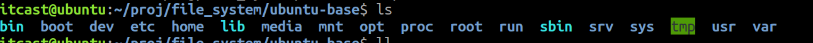</p><h2 data-lake-id="CQrJs" data-lake-index-type="2" id="CQrJs"><strong><span class="lake-fontsize-16" data-lake-id="u980b6d8c" id="u980b6d8c" style="color: rgb(0,0,0)">安装 Qemu-User-Static 工具</span></strong></h2><p data-lake-id="u5cb14031" id="u5cb14031"><span class="lake-fontsize-12" data-lake-id="u2060109e" id="u2060109e" style="color: rgb(0,0,0)">QEMU 是专门模拟不同机器架构的软件，在 ubuntu 中对其支持良好</span></p><p data-lake-id="u4ca83c53" id="u4ca83c53"><span class="lake-fontsize-12" data-lake-id="u0e7bf20b" id="u0e7bf20b" style="color: rgb(0,0,0)">安装</span><code data-lake-id="uec33eea9" id="uec33eea9"><span class="lake-fontsize-12" data-lake-id="u59a56680" id="u59a56680" style="color: rgb(0,0,0)">qemu-user-static</span></code></p><span class="yuque-card-unsupported">[codeblock]</span><p data-lake-id="u1a7c1c1a" id="u1a7c1c1a"><span class="lake-fontsize-12" data-lake-id="ue655a9f8" id="ue655a9f8">拷贝qemu到ubuntu-base对应目录</span></p><span class="yuque-card-unsupported">[codeblock]</span><h2 data-lake-id="fpQQl" data-lake-index-type="2" id="fpQQl"><span data-lake-id="u8ead9a2f" id="u8ead9a2f">设置软件源</span></h2><h3 data-lake-id="jyi2V" data-lake-index-type="2" id="jyi2V"><span data-lake-id="ueeacb344" id="ueeacb344">拷贝本机dns配置文件</span></h3><p data-lake-id="u9bf5acf0" id="u9bf5acf0"><span class="lake-fontsize-12" data-lake-id="u20821654" id="u20821654" style="color: rgb(0,0,0)">为了制作成功的根文件系统能够联网，可以直接拷贝本机的 </span><span class="lake-fontsize-12" data-lake-id="u4d94520f" id="u4d94520f" style="color: rgb(0,0,0)">dns </span><span class="lake-fontsize-12" data-lake-id="u197c9a60" id="u197c9a60" style="color: rgb(0,0,0)">配置文件到根文件系统的相应位置， </span></p><p data-lake-id="uc9bfd790" id="uc9bfd790"><span class="lake-fontsize-12" data-lake-id="udfb9ce2a" id="udfb9ce2a" style="color: rgb(0,0,0)">使用命令</span></p><span class="yuque-card-unsupported">[codeblock]</span><h3 data-lake-id="ppnOC" data-lake-index-type="2" id="ppnOC"><span data-lake-id="u8ab79bd9" id="u8ab79bd9">修改软件镜像源</span></h3><span class="yuque-card-unsupported">[codeblock]</span><p data-lake-id="u39d8ff92" id="u39d8ff92"><span class="lake-fontsize-12" data-lake-id="u86469574" id="u86469574">添加如下镜像源</span></p><span class="yuque-card-unsupported">[codeblock]</span><blockquote data-lake-id="ub546d29e" id="ub546d29e"><p data-lake-id="u1569eb90" id="u1569eb90"><span class="lake-fontsize-12" data-lake-id="u0e0a1db1" id="u0e0a1db1">其中focal是ubuntu20.04的编号</span></p></blockquote><h2 data-lake-id="zQaiz" data-lake-index-type="2" id="zQaiz"><strong><span class="lake-fontsize-16" data-lake-id="u922a610f" id="u922a610f" style="color: rgb(0,0,0)">挂载根文件系统并 Chroot</span></strong></h2><h3 data-lake-id="Sgee4" data-lake-index-type="2" id="Sgee4"><span data-lake-id="u2c5d65a7" id="u2c5d65a7">mount.sh</span></h3><p data-lake-id="u8deaa659" id="u8deaa659"><span class="lake-fontsize-12" data-lake-id="ud7b41c20" id="ud7b41c20" style="color: rgb(0,0,0)">在本机挂载刚刚下载好的文件系统，需要挂载 proc, sys, dev, dev/pts 等文件系统。使用命令</span></p><span class="yuque-card-unsupported">[codeblock]</span><blockquote data-lake-id="uf928f08d" id="uf928f08d"><p data-lake-id="uc1cc01b4" id="uc1cc01b4"><span class="lake-fontsize-12" data-lake-id="u8043f312" id="u8043f312">在ubuntu-base同级目录执行</span></p></blockquote><p data-lake-id="u2a7b03a0" id="u2a7b03a0"><span class="lake-fontsize-12" data-lake-id="u96cbeed6" id="u96cbeed6">添加如下内容</span></p><span class="yuque-card-unsupported">[codeblock]</span><p data-lake-id="u7a0f835f" id="u7a0f835f">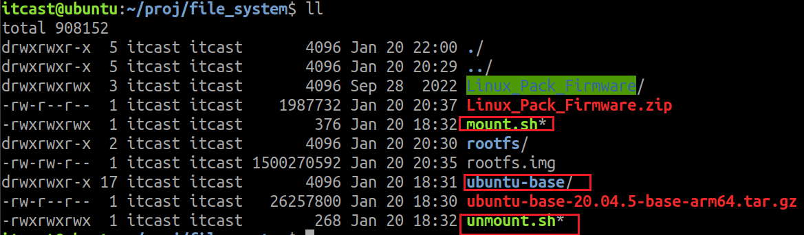</p><h3 data-lake-id="o7XIh" data-lake-index-type="2" id="o7XIh"><span data-lake-id="u7f20e286" id="u7f20e286">umount.sh</span></h3><p data-lake-id="u58586d56" id="u58586d56"><span class="lake-fontsize-12" data-lake-id="u8a0ae787" id="u8a0ae787" style="color: rgb(0,0,0)">后使用命令“vim umount.sh”添加卸载脚本</span></p><p data-lake-id="u434999c9" id="u434999c9"><span class="lake-fontsize-12" data-lake-id="u305cc327" id="u305cc327" style="color: rgb(0,0,0)">添加如下内容</span></p><span class="yuque-card-unsupported">[codeblock]</span><h3 data-lake-id="CRtbz" data-lake-index-type="2" id="CRtbz"><span data-lake-id="uee3eaf35" id="uee3eaf35">修改mount.sh和unmount.sh的权限</span></h3><span class="yuque-card-unsupported">[codeblock]</span><h3 data-lake-id="Hwswq" data-lake-index-type="2" id="Hwswq"><span data-lake-id="u53a70c88" id="u53a70c88">挂载文件系统</span></h3><p data-lake-id="u000a78d5" id="u000a78d5"><span class="lake-fontsize-12" data-lake-id="uf0493eab" id="uf0493eab">(1) 运行</span><code data-lake-id="uea549d2f" id="uea549d2f"><span class="lake-fontsize-12" data-lake-id="u09ba2656" id="u09ba2656" style="color: rgb(0,0,0)">mount.sh</span></code><span class="lake-fontsize-12" data-lake-id="u31a38de1" id="u31a38de1" style="color: rgb(0,0,0)">运行挂载</span></p><p data-lake-id="u66197f2e" id="u66197f2e">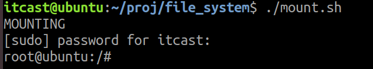</p><blockquote data-lake-id="u81342af6" id="u81342af6"><p data-lake-id="uf00bcfb2" id="uf00bcfb2"><span class="lake-fontsize-12" data-lake-id="u5eba2dbf" id="u5eba2dbf" style="color: rgb(0,0,0)">此时我们可以看到，根目录切换成了当前制作 ubuntu 的目录。</span></p></blockquote><p data-lake-id="ud9ea12f0" id="ud9ea12f0"><span class="lake-fontsize-12" data-lake-id="u2cdb9c8f" id="u2cdb9c8f">(2) 安装常用软件</span></p><blockquote data-lake-id="ube1e1fa7" id="ube1e1fa7"><p data-lake-id="u81812caf" id="u81812caf"><span class="lake-fontsize-12" data-lake-id="u66897c2a" id="u66897c2a" style="color: rgb(0,0,0)">由于 ubuntu base 是一个最小根文件系统，很多命令和软件都没有，因此我们需要先安装一下常用的 命令和软件，输入如下命令：</span></p></blockquote><span class="yuque-card-unsupported">[codeblock]</span><blockquote data-lake-id="u632d22a7" id="u632d22a7"><p data-lake-id="u33927f22" id="u33927f22"><span class="lake-fontsize-12" data-lake-id="u6cce77b5" id="u6cce77b5">apt update出现下面错误:</span></p><p data-lake-id="u3ac20bc8" id="u3ac20bc8">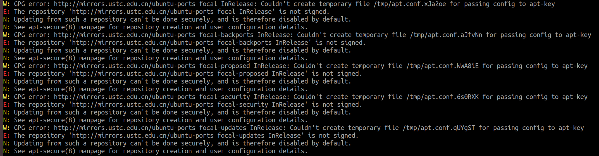</p><p data-lake-id="uc6d7bb8b" id="uc6d7bb8b"><span data-lake-id="uf0b4200d" id="uf0b4200d">需要</span><code data-lake-id="u07f19991" id="u07f19991"><span data-lake-id="uc83d5a4c" id="uc83d5a4c">chmod 777 /tmp</span></code></p></blockquote><p data-lake-id="u892d90ca" id="u892d90ca"><span class="lake-fontsize-12" data-lake-id="u3ea096e0" id="u3ea096e0">(3) </span><span class="lake-fontsize-12" data-lake-id="u4754bd72" id="u4754bd72" style="color: rgb(0,0,0)">设置 root 用户密码</span></p><span class="yuque-card-unsupported">[codeblock]</span><p data-lake-id="u915f8320" id="u915f8320"><span class="lake-fontsize-12" data-lake-id="uf5183deb" id="uf5183deb">(4) </span><span class="lake-fontsize-12" data-lake-id="u664736fc" id="u664736fc" style="color: rgb(0,0,0)">令设置主机名称和本机 IP</span></p><span class="yuque-card-unsupported">[codeblock]</span><p data-lake-id="uf2502e4b" id="uf2502e4b"><span class="lake-fontsize-12" data-lake-id="ub55670e5" id="ub55670e5" style="color: #DF2A3F">(5) 配置串口终端(系统启动的时候可以使用串口查看日志)</span></p><span class="yuque-card-unsupported">[codeblock]</span><blockquote data-lake-id="ua19937d4" id="ua19937d4"><p data-lake-id="u90497841" id="u90497841"><span data-lake-id="uf7902091" id="uf7902091">ttyFIQ0在不同的芯片上不同,具体如何查看暂不知晓</span></p></blockquote><p data-lake-id="ue8ea3958" id="ue8ea3958"><span class="lake-fontsize-12" data-lake-id="u94146c08" id="u94146c08">(6) </span><span class="lake-fontsize-12" data-lake-id="u1048339e" id="u1048339e" style="color: rgb(0,0,0)">配置 DHCP，</span></p><span class="yuque-card-unsupported">[codeblock]</span><blockquote data-lake-id="uec9f45d6" id="uec9f45d6"><p data-lake-id="u550f2bbd" id="u550f2bbd"><span class="lake-fontsize-12" data-lake-id="u8e926ebf" id="u8e926ebf">出错: </span><code data-lake-id="u8cedf530" id="u8cedf530"><span class="lake-fontsize-12" data-lake-id="u24789588" id="u24789588">bash: /etc/network/interfaces.d/eth0: No such file or directory</span></code></p><p data-lake-id="u787a3fcc" id="u787a3fcc"><code data-lake-id="u8f5da4d2" id="u8f5da4d2"><span class="lake-fontsize-11" data-lake-id="u72e89fa7" id="u72e89fa7" style="color: rgb(193, 132, 1)">mkdir</span><span class="lake-fontsize-11" data-lake-id="ud1149acd" id="ud1149acd" style="color: rgb(0, 0, 0)"> -p /etc/network/interfaces.d/</span></code></p></blockquote><p data-lake-id="u0145d392" id="u0145d392"><span class="lake-fontsize-12" data-lake-id="ud697223b" id="ud697223b">​</span><br/></p><p data-lake-id="u36b8f6fc" id="u36b8f6fc"><span class="lake-fontsize-12" data-lake-id="u1b9adbda" id="u1b9adbda">(7) 退出根文件系统</span></p><span class="yuque-card-unsupported">[codeblock]</span><p data-lake-id="ucb9a9c24" id="ucb9a9c24">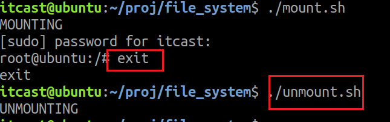</p><p data-lake-id="ubf637b5c" id="ubf637b5c"><span class="lake-fontsize-12" data-lake-id="ua35458c7" id="ua35458c7" style="color: rgb(0,0,0)">至此，ubuntu base 根文件系统就已经制作好了</span></p><h1 data-lake-id="FXwfT" data-lake-index-type="2" id="FXwfT"><span data-lake-id="uf87f48d2" id="uf87f48d2" style="color: rgb(0,0,0)">制作ubuntu文件系统镜像</span></h1><span class="yuque-card-unsupported">[codeblock]</span><blockquote data-lake-id="u6e853528" id="u6e853528"><p data-lake-id="u16014a19" id="u16014a19"><span class="lake-fontsize-12" data-lake-id="uf954fbc3" id="uf954fbc3">其中ubuntu-base就是根文件系统路径</span></p></blockquote><p data-lake-id="u5717e6be" id="u5717e6be">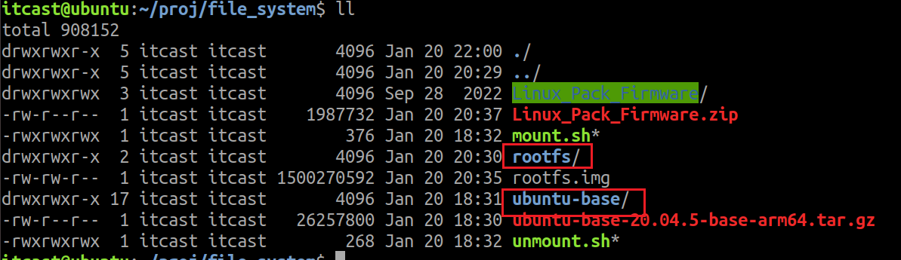</p><h1 data-lake-id="fErcS" data-lake-index-type="2" id="fErcS"><span data-lake-id="u6facc48d" id="u6facc48d" style="color: rgb(0,0,0)">打包根文件系统到update.img中</span></h1><blockquote data-lake-id="u8c4e14eb" id="u8c4e14eb"><p data-lake-id="u4f6aebf9" id="u4f6aebf9"><span data-lake-id="ua8eb87cf" id="ua8eb87cf">需要先把官方的buildroot构建走完,得到update.img</span></p></blockquote><h2 data-lake-id="yQpre" data-lake-index-type="2" id="yQpre"><span data-lake-id="uf4883ffc" id="uf4883ffc">将瑞芯微提供的</span><code data-lake-id="u01ed77dd" id="u01ed77dd"><span data-lake-id="u4887806a" id="u4887806a">Linux_Pack_Firmware.zip</span></code><span data-lake-id="ue1b33b14" id="ue1b33b14">拷贝到linux下并解压</span></h2><p data-lake-id="u5401d62c" id="u5401d62c">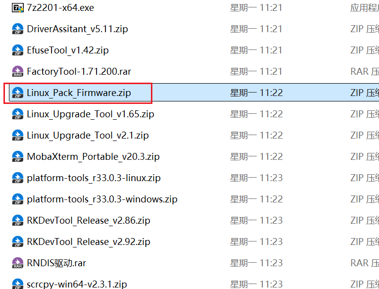</p><p data-lake-id="u1b3302f3" id="u1b3302f3">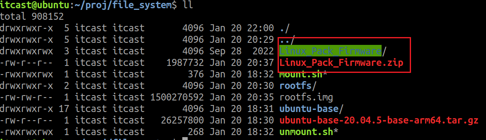</p><h2 data-lake-id="UG4Hu" data-lake-index-type="2" id="UG4Hu"><span data-lake-id="u655946a8" id="u655946a8">进入</span><code data-lake-id="u370c57d1" id="u370c57d1"><span data-lake-id="uc89815aa" id="uc89815aa">Linux_Pack_Firmware/rockdev</span></code><span data-lake-id="u905276ff" id="u905276ff">目录下</span></h2><p data-lake-id="ud301d3b5" id="ud301d3b5">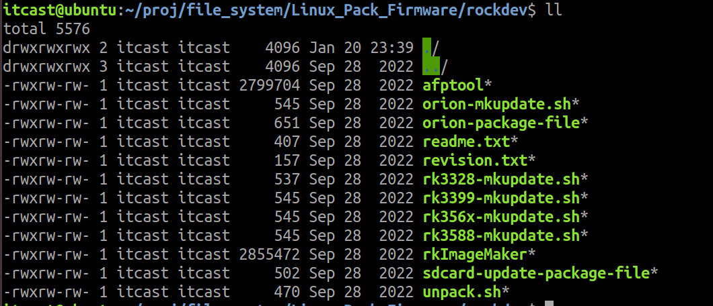</p><h2 data-lake-id="nkdvi" data-lake-index-type="2" id="nkdvi"><span data-lake-id="ub5967aa7" id="ub5967aa7">拷贝update.img到当前目录下</span></h2><blockquote data-lake-id="ue4e85052" id="ue4e85052"><p data-lake-id="ua543373e" id="ua543373e"><span data-lake-id="uf4d7155b" id="uf4d7155b">update.img需要通过buildroot的构建得到</span></p></blockquote><p data-lake-id="u7a166ec0" id="u7a166ec0">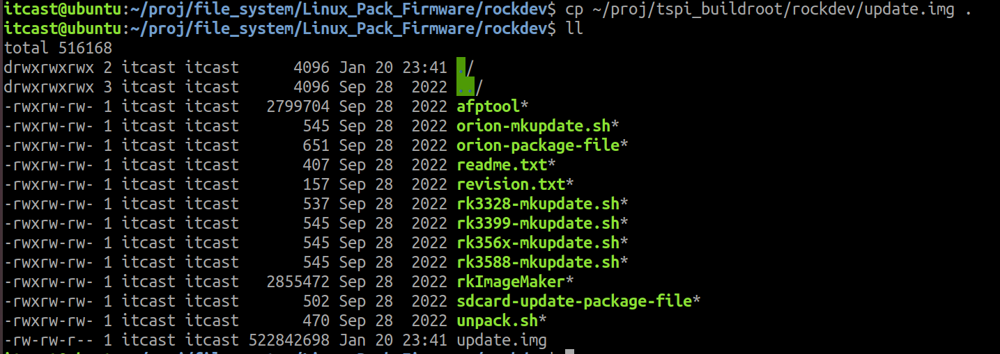</p><h2 data-lake-id="cs4r3" data-lake-index-type="2" id="cs4r3"><span data-lake-id="u097dae3d" id="u097dae3d">解压update.img</span></h2><p data-lake-id="uf918ca2e" id="uf918ca2e">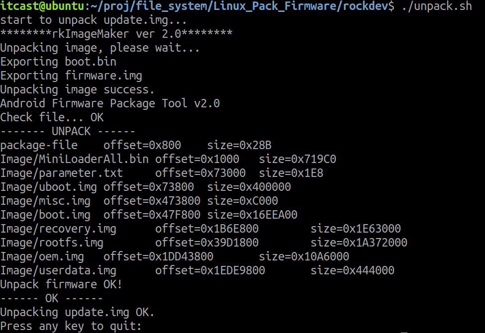</p><p data-lake-id="u978fbc1c" id="u978fbc1c"><span data-lake-id="u02f4846e" id="u02f4846e">解压之后在output中</span></p><p data-lake-id="u4ed4c709" id="u4ed4c709">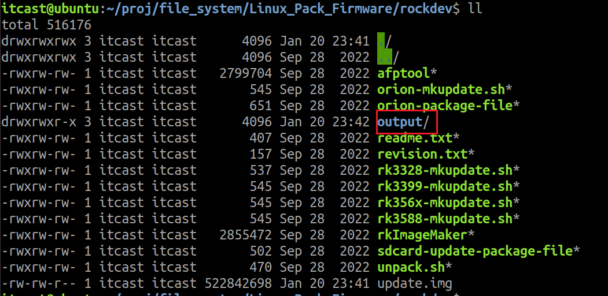</p><p data-lake-id="ud7c555c8" id="ud7c555c8"><span data-lake-id="uf9148844" id="uf9148844">output内容如下</span></p><p data-lake-id="u6ffb1c61" id="u6ffb1c61">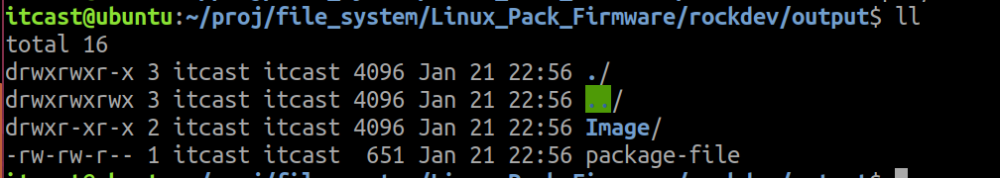</p><p data-lake-id="ueaef91c4" id="ueaef91c4"><span data-lake-id="u4883be2c" id="u4883be2c">镜像都在output/Image下</span></p><p data-lake-id="ub6a0f48e" id="ub6a0f48e">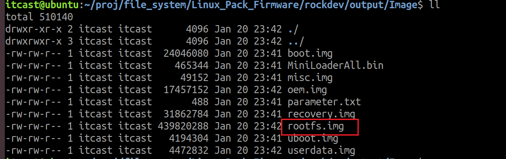</p><h2 data-lake-id="SqFPc" data-lake-index-type="2" id="SqFPc"><span data-lake-id="u4617f8e8" id="u4617f8e8">替换rootfs.img</span></h2><p data-lake-id="ud92fa4cc" id="ud92fa4cc"><span data-lake-id="udd912a4b" id="udd912a4b">把镜像中rootfs.img删除,拷贝</span><code data-lake-id="uf318cdc9" id="uf318cdc9"><span data-lake-id="u9a3b8aeb" id="u9a3b8aeb">2.</span><span data-lake-id="ua2f3cda3" id="ua2f3cda3" style="color: rgb(0,0,0)">制作ubuntu文件系统镜像</span></code><span data-lake-id="u6fd4a51c" id="u6fd4a51c">得到的</span><code data-lake-id="u1a8ef045" id="u1a8ef045"><span data-lake-id="u3720732c" id="u3720732c">rootfs.img</span></code><span data-lake-id="u1ef11950" id="u1ef11950">镜像</span></p><p data-lake-id="ue2f8b134" id="ue2f8b134">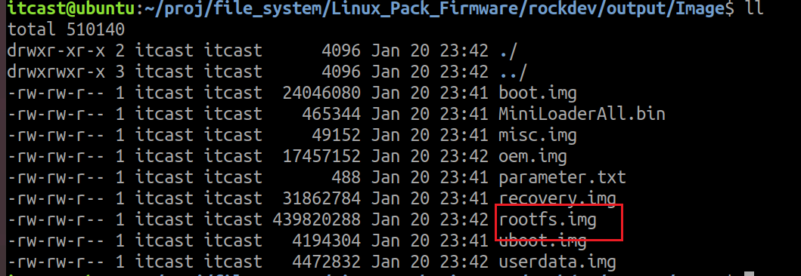</p><h2 data-lake-id="hzBn9" data-lake-index-type="2" id="hzBn9"><span data-lake-id="uc3933b71" id="uc3933b71">打包update.img镜像</span></h2><p data-lake-id="u79022cf3" id="u79022cf3"><span data-lake-id="u4c083e5c" id="u4c083e5c">回到output目录</span></p><p data-lake-id="u42d77283" id="u42d77283">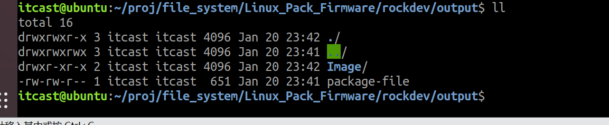</p><p data-lake-id="ue509c690" id="ue509c690"><span data-lake-id="u85928437" id="u85928437">移动Image目录和package-file到rockdev目录下</span></p><p data-lake-id="u27672f67" id="u27672f67">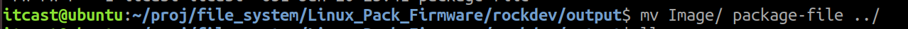</p><p data-lake-id="uc3d1c5e8" id="uc3d1c5e8">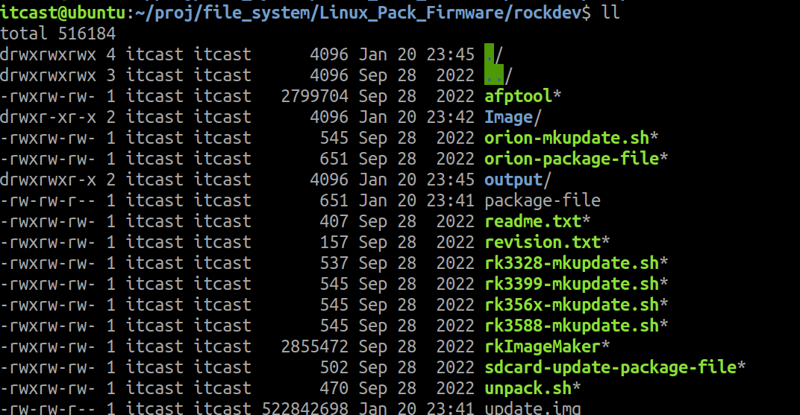</p><p data-lake-id="u70c2bf63" id="u70c2bf63"><span data-lake-id="uc06a37e9" id="uc06a37e9">构建update.img</span></p><p data-lake-id="u255e2753" id="u255e2753">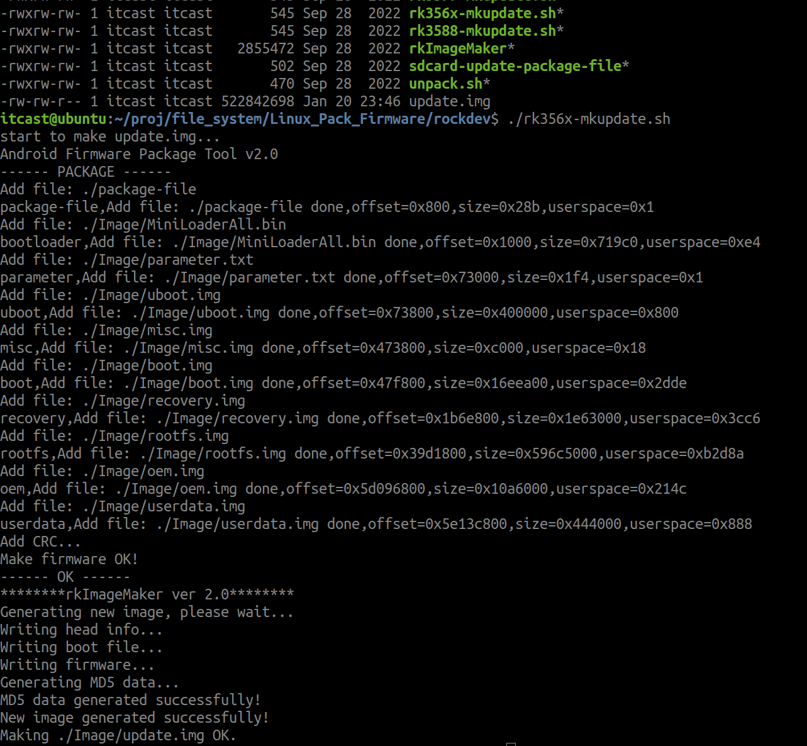</p><p data-lake-id="u7e8d8e7d" id="u7e8d8e7d"><span data-lake-id="u048d2dcc" id="u048d2dcc">构建结束会在rockdev中产生update.img镜像,可以烧录在emmc中</span></p><p data-lake-id="u935b2c51" id="u935b2c51">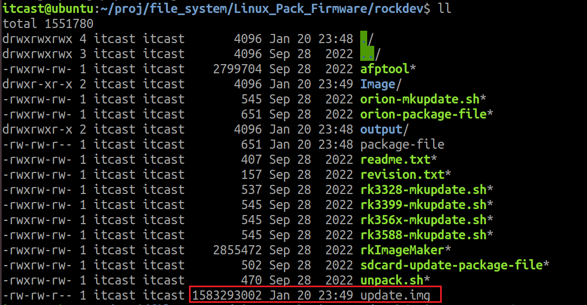</p><p data-lake-id="u17a0e331" id="u17a0e331"><br/></p><p data-lake-id="u9f3c3900" id="u9f3c3900"><br/></p><p data-lake-id="u78cdc8e6" id="u78cdc8e6"><br/></p>